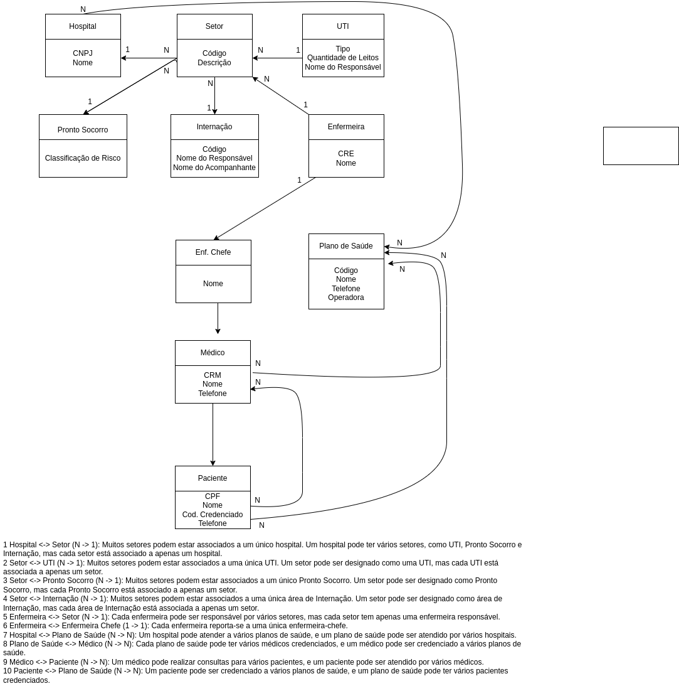

Disciplinas
-
BANCO DE DADOS Concluído
Materiais
Crie o modelo conceitual ER utilizando suas extensões para para um sistema que irá controlar um Hospital a partir da descrição a seguir. Para auxiliar utilize a ferramenta gratuita online draw.io (disponível em https://www.draw.io).
Sistema de controle hospitalar
+------------------+ +-------------------+ +-----------------------+
| Hospital | | Setor | | UTI |
+------------------+ +-------------------+ +-----------------------+
| CNPJ |<>----------| Código |<>---------| Tipo |
| Nome | | Descrição | | Quantidade de Leitos|
+------------------+ +-------------------+ | Nome do Resp. |
+-----------------------+
^
|
+------------------+ +-------------------+ +-----------------------+
| Pronto Socorro | | Internação | | Enfermeira |
+------------------+ +-------------------+ +-----------------------+
| Classificação | | Código | | CRE |
| de Risco |<>----------| Nome do Resp. |<>---------| Nome |
+------------------+ | Nome do Acompanh. | +-----------------------+
+-------------------+ |
| |
V V
+-------------+ +-----------------------+
| Enf. Chefe | | Plano de Saúde |
+-------------+ +-----------------------+
| Nome |<>----------->| Código |
+-------------+ | Nome |
| Telefone |
| Operadora |
+-----------------------+
^
|
V
+-------------+
| Médico |
+-------------+
| CRM |<>-------------------+
| Nome | |
| Telefone | |
+-------------+ |
| |
V |
+-------------+ |
| Paciente | |
+-------------+ |
| CPF |<>-------------------+
| Nome |
| Cod. Cred. |
| Telefone |
+-------------+
1 Hospital <-> Setor (N -> 1): Muitos setores podem estar associados a um único hospital. Um hospital pode ter vários setores, como UTI, Pronto Socorro e Internação, mas cada setor está associado a apenas um hospital.
2 Setor <-> UTI (N -> 1): Muitos setores podem estar associados a uma única UTI. Um setor pode ser designado como uma UTI, mas cada UTI está associada a apenas um setor.
3 Setor <-> Pronto Socorro (N -> 1): Muitos setores podem estar associados a um único Pronto Socorro. Um setor pode ser designado como Pronto Socorro, mas cada Pronto Socorro está associado a apenas um setor.
4 Setor <-> Internação (N -> 1): Muitos setores podem estar associados a uma única área de Internação. Um setor pode ser designado como área de Internação, mas cada área de Internação está associada a apenas um setor.
5 Enfermeira <-> Setor (N -> 1): Cada enfermeira pode ser responsável por vários setores, mas cada setor tem apenas uma enfermeira responsável.
6 Enfermeira <-> Enfermeira Chefe (1 -> 1): Cada enfermeira reporta-se a uma única enfermeira-chefe.
7 Hospital <-> Plano de Saúde (N -> N): Um hospital pode atender a vários planos de saúde, e um plano de saúde pode ser atendido por vários hospitais.
8 Plano de Saúde <-> Médico (N -> N): Cada plano de saúde pode ter vários médicos credenciados, e um médico pode ser credenciado a vários planos de saúde.
9 Médico <-> Paciente (N -> N): Um médico pode realizar consultas para vários pacientes, e um paciente pode ser atendido por vários médicos.
10 Paciente <-> Plano de Saúde (N -> N): Um paciente pode ser credenciado a vários planos de saúde, e um plano de saúde pode ter vários pacientes credenciados.
